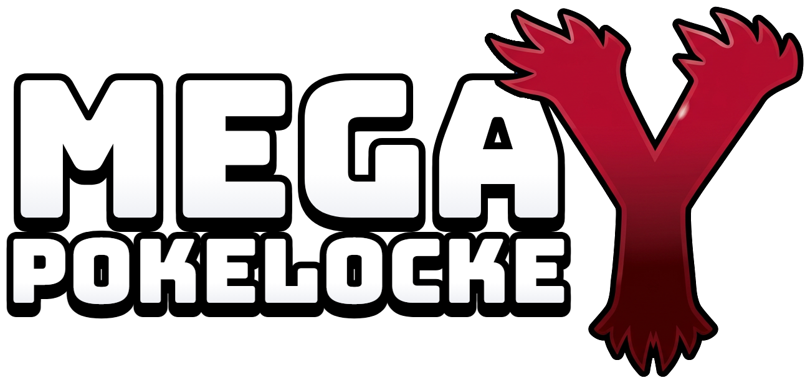
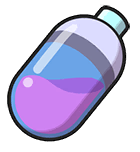
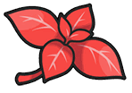

Lo que se firma antes de salir de Pueblo Boceto
En Pueblo Boceto (Kalos), a de de 20
De una parte, el entrenador o entrenadora , en adelante el Entrenador, que juega con su propia partida de Pokémon Y en la app Pokelocke.
Y de otra parte, David Martínez Palacios, en nombre de la Organización del Mega Pokelocke, que vela por el cumplimiento de estas normas y que se reserva el derecho a reírse de cada vida perdida.
Ambas partes se reconocen la capacidad necesaria para obligarse y, a tal efecto,
I. Que el Entrenador desea recorrer la región de Kalos de principio a fin, desde Pueblo Boceto hasta derrotar a la Campeona Dianta, con un juego randomizado según las Normas Mega descritas en el Anexo I, y ganar después el torneo final contra el resto de jugadores.
II. Que la app Pokelocke lleva la cuenta de vidas, capturas y medallas leyendo el juego, y que lo que marca la app es lo que vale, salvo error evidente que la Organización corregirá.
III. Que ambas partes acuerdan regirse por las siguientes
El presente contrato regula la partida del Entrenador en el Mega Pokelocke Y: cómo se capturan Pokémon, cómo se pierden vidas, qué ayudas tiene a lo largo del camino y cómo se juegan los torneos.
Ningún Pokémon del equipo puede superar el nivel tope: el del Pokémon más alto del próximo líder, con el +15 % incluido. La app y la Guía de juego indican el tope de cada tramo.
| Puesto | Premio |
|---|---|
| 1.º |  Cápsula Habilidad Menta a su elecciónHuevo aleatorio |
| 2.º | Huevo Menta |
| 3.º | Menta |
| Resto | Nada |
Para ganar el Mega Pokelocke, el Entrenador debe pasarse la Liga Pokémon con vidas y ganar el torneo final contra el resto de jugadores.
El Entrenador dispone de 10 000 Caramelos Raros. Se rellenan solos hasta 999 en la mochila cada vez que abre el juego, hasta agotar los 10 000. Su uso está sujeto a la cláusula quinta.
Si la app se equivoca al contar, el Entrenador lo corrige en el momento con F7 (quita una vida) y F8 (añade una), siempre a la vista del stream. Corregir a favor propio sin motivo se considera trampa y la Organización puede anular la partida.
Con su firma, el Entrenador declara haber leído y aceptado todas las cláusulas y los anexos, y se compromete a jugar limpio, a no reiniciar para salvar a un Pokémon y a llorar cada vida perdida en directo.
Y en prueba de conformidad, ambas partes firman el presente contrato en el lugar y fecha arriba indicados.
| Elemento | Condición |
|---|---|
| Pokémon salvajes | Aleatorios en cada encuentro, de cualquier tipo. |
| Iniciales | Aleatorios, siempre con dos evoluciones. |
| Legendarios y regalos | Totalmente aleatorios. Ni legendarios ni singulares se pueden capturar (cláusula tercera). |
| Entrenadores | Equipos aleatorios y un 15 % más de nivel. Combates importantes con equipo de seis. |
| Movimientos | Aleatorios. |
| Habilidades | Aleatorias. |
| Objetos del suelo | Aleatorios. |
| Intercambios del juego | Lo que te dan es aleatorio. |
| Estadísticas base | Sin cambios. |
| Tipos | Sin cambios: la tabla de tipos de la Guía vale tal cual. |
| Evoluciones | Sin cambios. |
| Facilidad de captura | Normal. |
| Cuándo | Qué toca |
|---|---|
| Semanas 1 y 2 | De Pueblo Boceto a la 4.ª medalla. Al conseguirla, se para y se prepara el equipo. |
| Sábado | Torneo intermedio: comprobar el nivel y repartir premios. |
| Semanas 3 y 4 | De la 4.ª medalla a la Liga Pokémon, que hay que pasarse con vidas. |
| Sábado | Torneo final: decide quién gana el Mega Pokelocke. |
| Medalla | Líder | Qué ocurre |
|---|---|---|
| 1.ª | Violeta | — |
| 2.ª | Lino | Fin de la fase fácil: guarda y reinicia el juego. Primer huevo. |
| 3.ª | Corelia | — |
| 4.ª | Amaro | Fin de la primera parte: se deja de avanzar y solo se prepara el equipo hasta el torneo intermedio. Segundo huevo. |
| 5.ª | Lem | — |
| 6.ª | Valeria | Tercer huevo. |
| 7.ª | Ástrid | — |
| 8.ª | Édel | Cuarto huevo. Camino de la Liga. |
| Tecla | Qué hace |
|---|---|
| E | Usa el vial (con la ventana del juego delante y fuera de combate). |
| F7 | Quita una vida. |
| F8 | Añade una vida. |
Pokémon y sus nombres © Nintendo / Game Freak / The Pokémon Company. Documento sin ánimo de lucro para jugar entre amigos.